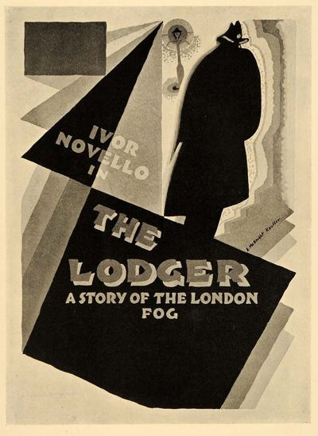

The Lodger
Studio: Gainsborough Pictures
Starring: Marie Ault, June Tripp, Malcolm Keen
Director: Alfred Hitchcock
Writer: Eliot Stannard, Marie Adelaide Belloc Lowndes, Alfred Hitchcock
Producer: Michael Balcon, Carlyle Blackwell
The Lodger: A Story of the London Fog is a 1927 British silent thriller film directed by Alfred Hitchcock and starring Marie Ault, Arthur Chesney, June Tripp, Malcolm Keen and Ivor Novello. Hitchcock's third feature film and the earliest to survive intact, it was released on 14 February 1927 in London and on 10 June 1928 in New York City.
Watch Online: Internet Archive
Trivia
- Based on The Lodger (1913 novel by Marie Adelaide Belloc Lowndes).
- The Lodger is based on a novel of the same name by Marie Belloc Lowndes about the Jack the Ripper murders, as well as the play Who Is He?, a comic stage adaptation of the novel by Horace Annesley Vachell that Hitchcock saw in 1915.
- News of the film was announced by the British press at the start of 1926 and Ivor Novello was announced as the lead in February.
- Originally, the film was to end with ambiguity as to the lodger's innocence.
Previous Showings
1 Run • 1 Festival
All runs on record (1):
- February 4, 2000Alfred Hitchcock Film Festivalw/ The Pleasure Garden